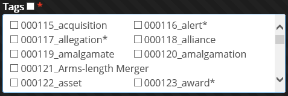
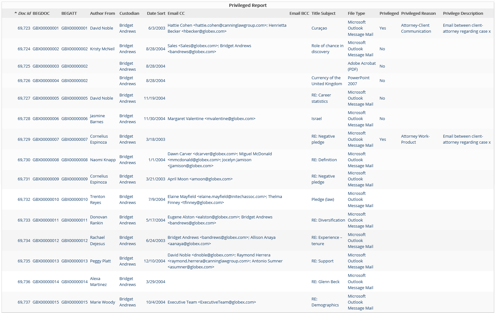

This report presents documents based on tags selected for the report. Included are document totals, the applied tag(s), and field data and other applied tags as defined by your administrator.
Complete the following selections:
Report Title: A report title is selected by default; change the title if needed.
Tags: Select the tags to be included in the report, either all tags or individual tags. Typically, tags indicating document privileges would be selected.

